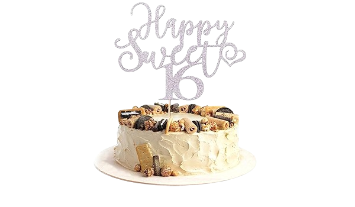

16 yosh – bu hayotdagi ajoyib bir bosqich, o'sish va o'zgarishlar davri. Bu yoshda sen ko'p narsalarni o'rganasan, o'zingni va dunyoni kashf etasan. Har bir yangi kun yangi imkoniyatlar olib keladi. Sen o'zingdagi o'zgarishlarni his qila boshlaysan, chunki bu yoshda jismoniy va ruhiy rivojlanish tez sur'atlar bilan amalga oshadi.
16 yoshda o'z maqsadlaringni aniqlash va ularga intilish juda muhim. Dasturchi bo'lish orzusi – bu ulkan imkoniyatlar va ijodiy rivojlanish yo'li. Har bir kichik g'oya, har bir yozilgan kod kelajakda katta natijalarga olib kelishi mumkin.
O'zingni rivojlantirishda hech qachon to'xtama, yangi tillar va texnologiyalarni o'rgan, muammolarni hal qilish ko'nikmalarini rivojlantir. Har bir muvaffaqiyat – bu yangi yutuqlarga yo'l ochadi.